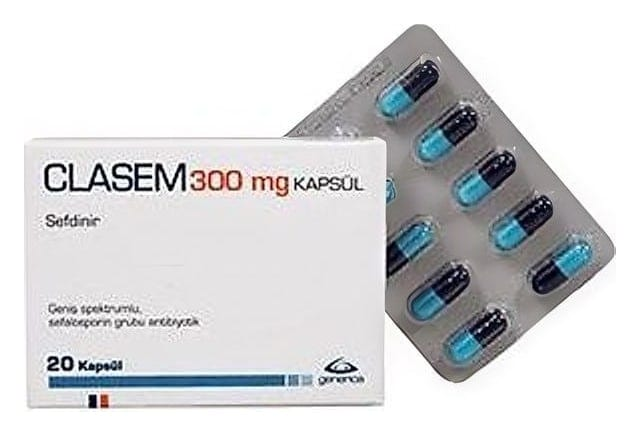

Clasem 300 mg Kapsül, 20 Adet

Ne için kullanılır
KT · Bölüm 1CLASEM 300 mg kapsüldeki etkin madde sefdinirdir. Sefdinir, üçüncü kuşak sefalosporin grubu olarak adlandırı lan antibakteriyel bir ilaç grubunda yer alır. CLASEM, 10 ve 20 kapsül içeren ambalajlarda piyasaya sunulmaktad ır. Kapsüller, sarı renkli toz içeren, mor kapak ve turkuaz gövdeden olu şan, sert jelatin kapsüllerdir. CLASEM, ilac ın aktif olduğu bakterilerin neden oldu ğu enfeksiyonların tedavisinde kullanıl ır. CLASEM aşa ğıda yer alan hastalıklar ın tedavisinde kullanıl ır: •Toplum kökenli akciğer iltihab ı •Kronik bronş itin akut alevlenmesi •Yüz kemiklerinin içindeki hava bo şlukların ın iltihabı •Bademcik iltihab ı / Yutak iltihabı •Deri ve yumu şak doku enfeksiyonları